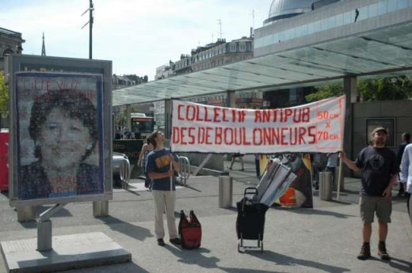
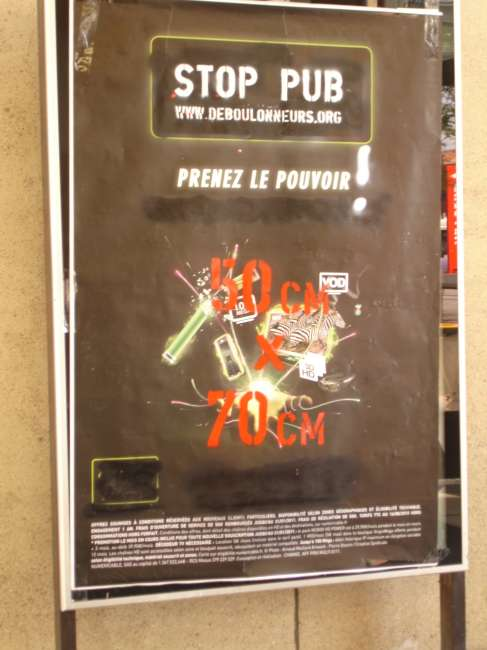
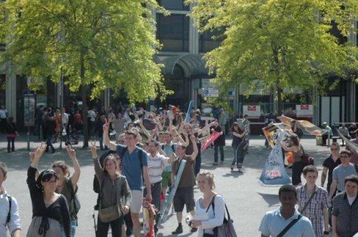
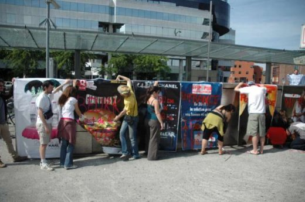
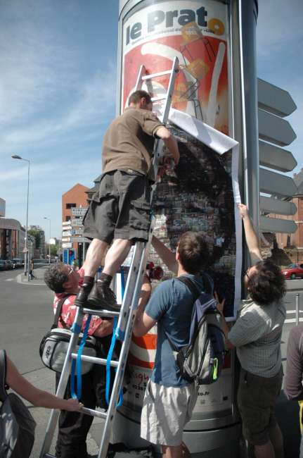
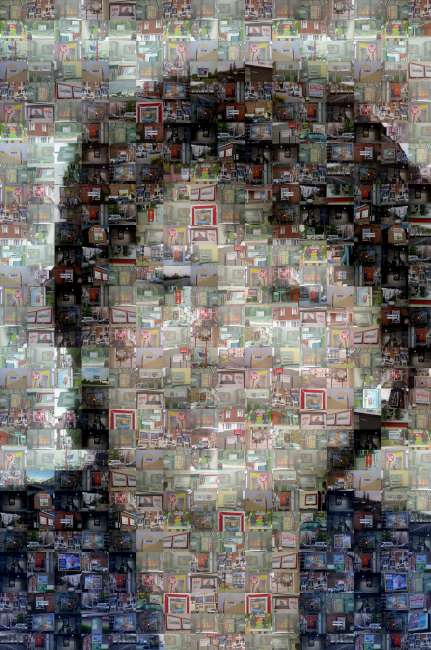

| |
Site dédié à la publication d'informations communiquées par le Collectif des déboulonneurs. En aucun cas ce site n'appelle à des actions illégales. | |
 |
||
|
Accueil du site > Lille > Action du Collectif des Déboulonneurs de Lille – 7 Mai 2011

Résumé de l’action :Date : 7 mai 2011 Heure approximative de l’action elle-même : 15h15 à 16h Lieu précis de l’action : Gare Lille Flandres, Place des Buisses Nombre de panneaux touchés : une trentaine de panneaux 2m² Propriétaire des panneaux touchés : CBS Nombre d’activistes : 30 Nombre approximatif de sympathisants : 30 Nombre approximatif de passants-spectateurs : De très nombreux passants Nombre approximatif de journalistes présents : 1 journaliste de Nord Eclair Nombre approximatif de policiers : Plusieurs agents de la police ferroviaire, plus le directeur régional de la SNCF Attitude de la police : Sur les quais, la police nous a immédiatement demandé de retirer nos affiches, puis un agent scnf les a arrachées. Menace d’amende, négociation, apaisement. Faits particuliers : L’action s’est déroulée dans le cadre du Village aRtiviste de Lille (www.radiovillage.org). Retombées presse :

Compte-rendu plus détaillé :Il s’agit d’une action qui diffère des précédentes dans la mesure où il s’est agi de recouvrir les panneaux publicitaires de la gare de Lille Flandres et de la place des Buisses connexe par une quarantaine d’affiches dont les publicités ont été détournées de leurs messages initiaux. Ce travail de détournement des messages publicitaires a été réalisé au préalable par les membres du collectif qui s’étaient réunis pour le mener à bien. Trois autres affiches de 2 m² environ ont par ailleurs été réalisées de toutes pièces par un assemblage de 16 feuilles au format A3. Ces trois affiches représentent le visage de Martine Aubry, maire de Lille, sous forme d’une mosaïque composée de plus de 250 photos de panneaux publicitaires Lillois. Pour en revenir à l’action proprement dite, celle-ci se déroulait dans le cadre du Village aRtiviste ((www.radiovillage.org) du 5 au 7 mai 2011, ensemble de manifestations organisées par divers mouvements d’artistes, dont l’Eglise de la Très Sainte Consommation (www.consomme.org) Le rendez-vous était fixé à 14 h 55 devant la sortie de la gare de Lille Flandres située rue de Tournai. Vers 15 h nous nous sommes dirigés vers le point de rencontre des voyageurs situé devant les voies 4 et 5. Nous avons attendu que la chorégraphie des « villageois » démarre, ce qui se produisit vers 15 h 10. En tant que membres du Collectif des Déboulonneurs, nous étions une trentaine sans compter la présence de la journaliste de Nord Eclair. Aucun policier n’est venu, à ce moment, « troubler » notre « ordre public ». A la fin de la chorégraphie (qui a duré environ 5 mn) Sébastien a présenté les modalités de notre action au mégaphone. Nous nous sommes ensuite partagés en trois groupes dont un pour les panneaux du hall d’entrée de la gare et deux à proximité des quais. L’action dans le hall d’entrée a rencontré un vif succès, suscitant l’intérêt des « villageois » venus en soutien, mais aussi celui des passants. Agissant rapidement et de manière spectaculaire, nous avons expliqué le but de notre action, et collecté de nombreux applaudissements, puis invité les spectateurs à nous suivre sur les quais d’attente. Alors que certaines publicités détournées avaient déjà été scotchées sur les panneaux situés à l’en-tête des voies près du point de rencontre, deux agents de la S.N.C.F. sont alors intervenus pour arracher systématiquement ces affiches. Après de vaines et âpres négociations, Alessandro proposa alors d’effectuer une exposition temporaire avec les affiches non déchirées en les faisant tenir à bras tendus par les membres du Collectif, le temps de prendre des photos. Initiative une de fois de pus suivie d’une série d’applaudissements nourris. Aless a alors pris à son tour le mégaphone suivi d’Helena qui en a profité pour scander le slogan « Ni à vendre, ni à prendre, les femmes ne sont pas des objets », tandis qu’une militante était scotchée sur un panneau, figée en publicité vivante. A signaler qu’un troisième groupe a profité de la confusion régnante pour opérer sur un quai à l’écart. Et pour l’anecdote, la seule affiche détournée restée quelques jours sur les quais (car moins en vue) fut l’œuvre du petit garçon de 3 ans de Marion, très fier de lui ! Emmené par une chorégraphie muette à la Pina Bausch (version artiviste), le groupe est sorti de la gare en file indienne avec les affiches déroulées à la main en se dirigeant vers la place des Buisses. Place des Buisses il y eut une présence policière, mais les agents du maintien de l’ordre ne sont pas intervenus. Le groupe a scotché les affiches sur le rebord extérieur de l’escalier menant à la bouche de métro, puis sur le panneau publicitaire C.B.S. non boulonné situé près de cet escalier. Beaucoup de curieux se sont arrêtés pour nous soutenir. Alors que Sébastien a repris le micro, la première affiche sur Martine Aubry fut scotchée sur la face ouest de ce panneau tandis que la banderole portant l’inscription « Collectif antipub des déboulonneurs » fut déployée. Sur l’affiche du maire de Lille étaient inscrits les commentaires « Lille ville sans pub ? Courage Martine ! ». Maxime prit alors la parole au micro pour informer les curieux du bien fondé de notre action. Au son d’un trombone à coulisses une seconde Martine Aubry fut apposée sur la colonne publicitaire située non loin de l’entrée de l’espace commercial Euralille entre les deux gares. Devant de nombreux spectateurs, et pour clore l’action, nous chantâmes en chœur la chanson intitulée « Petite histoire de la publicité », récoltant les derniers applaudissements d’une action très réussie et enthousiasmante ! 


Mosaïque
|
|
Site utilisant SPIP - Hébergement Ouvaton
|